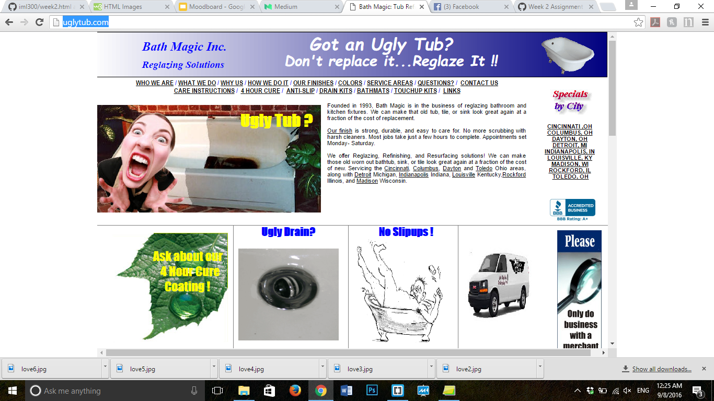

1. Good Typography

I believe that Medium is an example of a website with good typography because the colors are bold and eyecatching, but not overpowering. The fonts are clear, modern and simple. My eyes can read the text easily and it's aesthetically pleasing.
2. Bad Typography

This website is just so visually unappealing that I do not know where to begin. The fonts are all over the place, there are random pictures and absolutely no color scheme. The fonts are incredibly basic and there is no organization for the eyes to follow. Overall, there are countless areas this website could do better, visually, on.